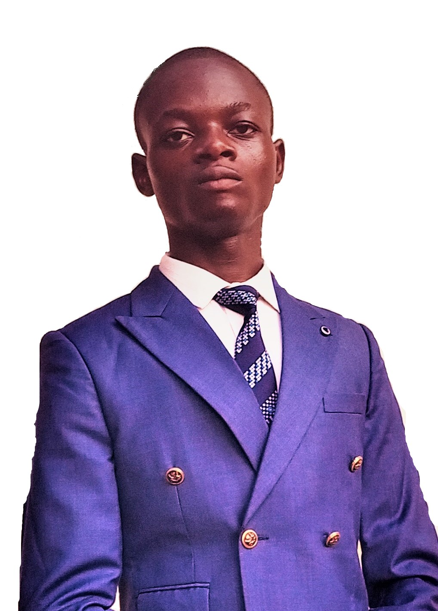

Autonomie, transmission, impact local
Bonjour, je suis Simon, passionné par le développement web et la pédagogie numérique. J’ai conçu plusieurs sites web et organisé une formation locale en programmation pour autonomiser les jeunes de Mbujimayi.
je suis un programmeur passioné par le langage de programmation Python avec lequel je peux réaliser des analyses économiques géo-metéorologique
je suis celui qui pense qu'avec le numérique l'eclosion économique et technologique de notre pays RDC est possible
Il suffit juste de la volonté des visionnaires que je suis pour réaliser l'impossible
J’ai structuré une formation en programmation alignée aux cadres DigComp et e-CF. Elle a permis à plusieurs jeunes de créer leurs premiers projets web et de comprendre les bases du numérique.
Voir plus sur la formation
Je crois en une pédagogie éthique, inclusive et reproductible. Chaque projet est une opportunité de transmettre, d’inspirer et de construire un avenir numérique local.